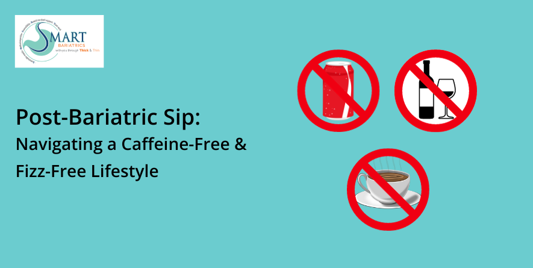

Navigating Your Post-Bariatric Lifestyle: Why Avoiding Carbonated Drinks Matters
Avoiding Carbonated Drinks Post-Surgery
After undergoing weight loss surgery, you might be advised to avoid soda and carbonated drinks to avoid issues like bloating and belching. While the belief that carbonation stretches the pouch after gastric sleeve surgery is a myth, the bubbles in these beverages can cause discomfort for bariatric patients. Embracing a post-bariatric lifestyle means understanding these potential discomforts and making appropriate beverage choices.
Types of Carbonated Beverages to Avoid
Carbonated beverages include sparkling water, regular and diet sodas, seltzer water, carbonated alcohol, etc. Basically, if your beverage fizzes or pops, it contains carbonation.
Recommendations from Your Surgeon or Dietician
Your Bariatric Surgeon/Dietician will likely recommend a period of abstaining from carbonation during the healing process. Though, mostly bariatric surgery programs suggest avoiding carbonation for life, primarily due to the added sugars and calories present in many carbonated drinks, which can lead to weight gain, and also to prevent discomfort associated with ingesting fizzy drinks.
Effects of Carbonation Post-Surgery
After gastric sleeve or gastric bypass surgery, a significant portion of your stomach is removed. Consuming carbonation can make you feel bloated and uncomfortable as your stomach fills with carbon dioxide. High sugar and calorie content in carbonated drinks, like sodas, can contribute to weight gain. Better to opt for non-carbonated alternatives like water, zero-calorie flavored water, protein shakes, plant-based milks like soy and almond milk, or decaf coffees and teas without added sugars.
The Impact of Caffeine and Alcohol on Your Post-Bariatric Lifestyle
Caffeine acts as a diuretic, potentially leading to dehydration and stomach ulcers with excessive consumption post-surgery. Dehydration is more common post-bariatric surgery due to limited fluid intake. Alcohol, being a diuretic, poses risks of rapid absorption and alcohol poisoning, especially considering the reduced stomach size post-surgery.
Tips for Consuming Alcohol Post-Surgery
If you choose to consume alcohol in your post-bariatric lifestyle, opt for lower sugar options, avoid sugary mixes, and fizzy alcoholic beverages like Beer and Champaign, limit your intake, and go slow to minimize side effects and risks. Remember, being overly restrictive on your diet can have negative effects, so choose wisely, follow the expert advice, and enjoy in moderation!!
We at Smart Cliniqs provide the best bariatric surgery in Delhi.
Back to Blog